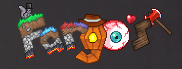

Terraria is a 2D sandbox action-adventure game made by Re-logic, revolving around exploration, survival, crafting, combat, mining, etc.
Terraria is noted to be similar to Super Metroid and Minecraft in terms of exploration and adventure.
The game was first published in May of 2011, and since then, it has been posted to numerous platforms and is still receiving updates.
I have played this game for almost a decade. A couple of years ago, I went to look at mods that added new content as if it was free downloadable content since I've already played the base game a lot.
I found a couple that I really loved, and that I still keep playing to this day; Here they are.
The Calamity Mod
Currently the most downloaded mod in the tModLoader workshop in Steam, and for good reason as well.
The mod adds more hours into a game, which already takes a ton of hours to beat, and includes content and game progression even after beating the base game's final boss.
Calamity adds tons of new bosses, biomes, thousands of items, NPCs, and even harder difficulty options.
Calamity also has a pretty cool soundtrack, with the head composer being DM Dokuro. Here's one of my favorites.
This is the mod I play the most; it has some heavy replay-value, so much so that whenever a new update for this mod comes out, I start a new playthrough.
Thorium Mod
Thorium feels as if the developers of Terraria itself made an update to the game.
Along with adding more hours of content, more bosses, even more items than Calamity, and some NPCs, there are also 3 new classes added in this mod.
There is the Bard, which is a music based class, the healer, which can even revive other players from death, and the throwing class, a class based on a removed subclass from the base game.

Fargo's Soul Mod
Take Terraria and turn it into Dark Souls, along with adding an unnecessarily large crafting tree.
Fargo's Soul Mod's primary features include adding a difficulty mode which almost completely changes the way enemies and bosses work, and with that, it also adds numerous crafting recipes which all build up to a single, powerful accessory at the end of the game.
I remember the first time playing this mod not knowing that even the most seasoned of players can struggle against something new. I even had to completely change playstyles when approaching bosses or certain enemies.
Despite its difficulty, I find this mod really fun once one gets used to how it works.
Wrap-up
I have played all of these mods twice or thrice now, with Calamity being the most repeatedly played mod by me. I do not even know how many times I have replayed that mod.
I hope that, if you have Terraria, and if you have enough experience in that game, that you try out these mods, though I do not recommend trying out Fargo's Soul Mod first.